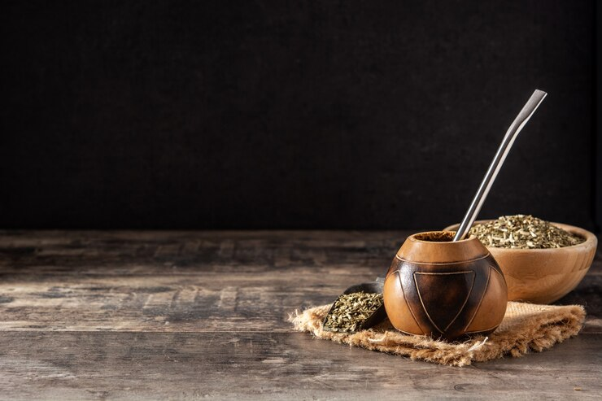

¿Como curar el mate de calabaza?
Curar el mate es preparar el recipiente (de calabaza) para que pueda utilizarse. El curado, hace que los poros del mate se sellenlos poros del mate se sellen, y el sabor del recipiente, no pase a la infusión. En la Argentina, los pasos y métodos para curar el mate son muy variados y culturales.
¿Hay que curar todos los mates?
Solamente los de calabaza, madera o los de cuernos y pezuñas de animales. Como después de usarlos, tardan un poco en secarse, se corre el riesgo de que se genere moho o partículas extrañas: Hay que secarlos bien cuando se termina de tomar.
¿Como curar un mate de calabaza para mate dulce?
- Lavar por dentro el recipiente. Este primer paso se hace con agua caliente, preferentemente hervida y sirve para desinfectar y eliminar bacterias, polvo y fibras.
- Echarle azúcar. Cualquier tipo de azúcar sirve. Dos cucharaditas son suficientes, pero si el mate es más grande, agregar más. Tapar con la mano la entrada del mate y agitarlo para que el azúcar se pegue a las paredes.
- Dejar secar con el azúcar. Esperar unas horas hasta que el azúcar se haya secado, dejando una capa que cubra las paredes del mate.
- Quemar con carbón: cuando el mate ya está seco, echar dos brasitas pequeñas de carbón caliente, cubrir la boca del mate con la mano, usando un repasador para no quemarse, y agitarlo hasta que las brasas se apaguen.
- Repetir la operación. Este paso no es obligatorio pero es bueno repetir los pasos 2, 3 y 4 para asegurarnos que se cure bien.
- Utilizar siempre yerba usada (no tiene sentido usar yerba nueva porque después esa yerba se descarta). Humedecer la yerba con agua tibia para que hinche y dejarlo así toda una noche.
- Fin de la curación y ¡a cebar el mate dulce! Al día siguiente el mate estará listo para lavar y usarse por primera vez
¿Que hago si el mate esta mal curado?
- ESTO sucede cuando el mate se llena de hongos . En este caso aconsejamos tirar la yerba y llenar el recipiente con agua hervida hasta el tope y dejar reposar por unos minutos.
- Luego, tirar el agua y con mucha paciencia raspar con una cuchara hasta sacar toda la capa negra que quedó adentro.
- Volver a repetir el proceso de llenar el mate con yerba usada, dejar reposar 24 hs y al vaciar el mate, estar atentos a la formación de hongos.